USB探索|2.设备的连接和枚举
1. 主设备和从设备
USB通讯的两端分别称为:HOST(主设备/USB主机)和Device(从设备/USB设备)，最常见的主设备就是PC。 USB主设备一般有以下的功能：
- 检测USB设备的插拔动作
- 管理主从通讯之间的控制流
- 管理主从通讯之间的数据流
- 记录主机状态和设备动作信息
- 控制主控制器和USB设备间的电气接口
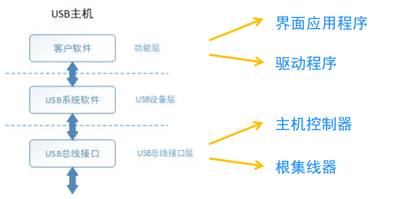
USB设备按照功能分成集线器和功能设备。
集线器: 用于扩展USB主机的USB端口；结构上有一个上行端口，多个下行端口；支持级联，系统中最多5个集线器（不包括主机的根集线器)；支持速度转换。
功能设备：一个独立的外围设备，可以是单一功能也可以是多功能的合成设备；内部包含有描述自身功能和资源需求的配置信息。
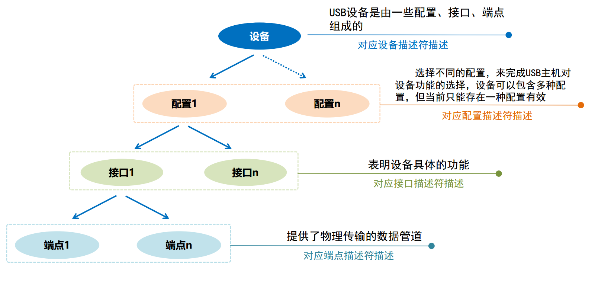
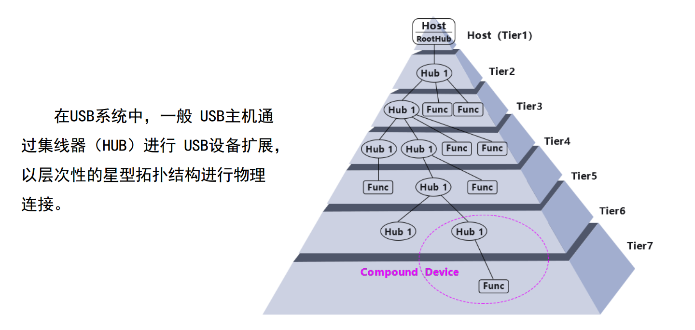
主机和USB设备之间通讯物理通道:主设备分配的地址/默认地址0＋从设备固有端点号。
主机和USB设备之间时间长度单位:帧/微帧。
主机和USB设备之间协议处理基本单位:事务处理。
主机和USB设备之间通讯:在基本单元“事务”中，主机总是发起者，并且和设备交互应答方式进行通讯。
2. 设备的连接和检测
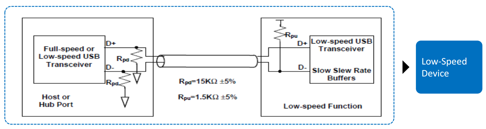
- USB主机端口在D＋和D-上都有15kQ电阻接地
- 全速USB从设备在D+上连有1.5kQ的电阻到3.0V-3.6V电压
- 没有连接:主机端口检测到D+和D-电压都近地0V
- 全速设备连接:主机端口检测到D＋电压约3V，D-电压近地OV
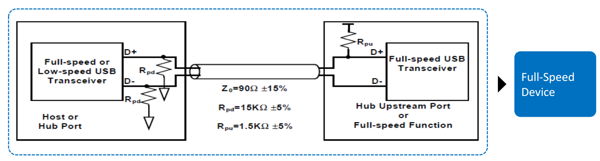
- USB主机端口在D+和D-上都有15kQ电阻接地
- 全速USB从设备在D+上连有1.5kQ的电阻到3.0V-3.6V电压
- 没有连接:主机端口检测到D+和D-电压都近地0V
- 全速设备连接:主机端口检测到D+电压约3V，D-电压近地0V
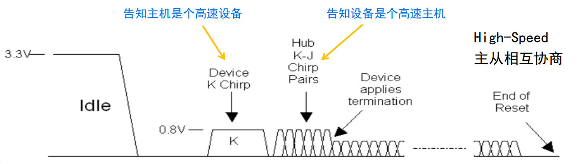
- 高速设备先以全速设备结构和主机连接，它们之间做双向检测
- 主机输出总线复位信号期间，USB设备以是否可以产生Chip K信号来表明高速或全速身份
- 在Chip K信号后，主机是否发生KJ序列来表明高速主机身份或者是全速主机身份
- 匹配到高速主机和高速设备后，USB设备断开D+上的1.5kQ的上拉电阻，连接D+/D-上的高速终端电阻，进入默认的高速状态，否则以全速状态通讯
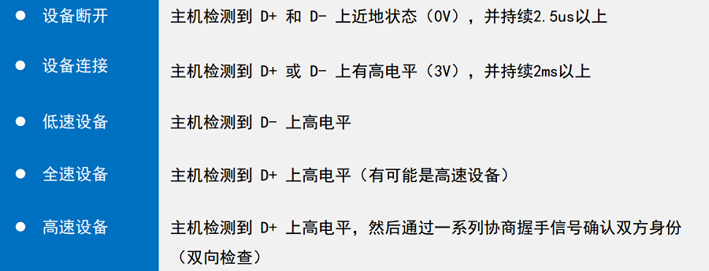
总线的几种变化：
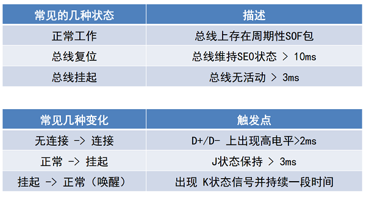
3. 设备的枚举
设备插入的过程：连接检测 → 主机枚举USB设备 → 有效数据传输、功能控制等。
枚举就是：USB主设备向USB从设备通过获取各种描述符，从而了解设备属性，知道是什么样的设备，并加载对应的USB类、功能驱动程序，然后进行后续一系列的数据通信。特点如下：
- 主设备连接识别从设备必须的过程
- 由多个控制传输构成
- 经过地址0(缺省地址）到其他地址（主设备分配地址）的通讯
- 对于挂载多个USB从设备的系统，主设备是逐一进行枚举操作
在说枚举之前，先回顾一下USB的一种传输模式一一控制传输。这种传输在USB中是非常重要的，它要保证数据的正确性，在设备的枚举过程中都是使用控传输。控制传输分为三个过程：建立过程、可选的数掘过程及状态过程。建立（setup）过程都是由USB主机发起的。它开始于一个SETUP令牌包．后面紧跟一个DATA0数掘包，接着就是数据过程。如果是控制读传输．那么数据过程就是输人数据；如果是控制写传输，那么数是输出数据．如果在建立过程中．指定了数据过程的长度为0，则没有数据过程．数据过程之后是状态过程。状态过程刚好与数据过程的数据传输方向相反：如果是控制读传输，则状态过程是一个输出数据包：如果是控制写传输．则状态过程是一个输人数包。状态过程用来确认所有的数据是否都已正确传输完成。
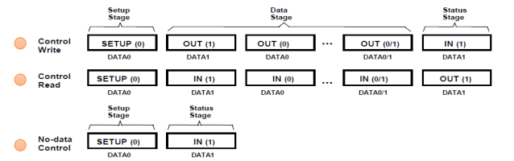
控制传输的特点：
- 是所有USB从设备必须支持的传输方式，固定使用端点0通讯
- 控制传输的方向是双向的，既可以主机下传数给设备，又可以从设备上传数据
- 多用于主设备和从设备进行信息、功能、状态等方面的获取和修改
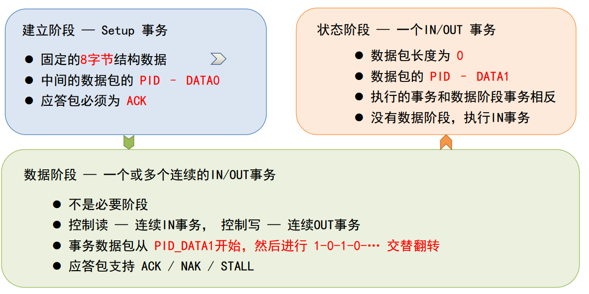
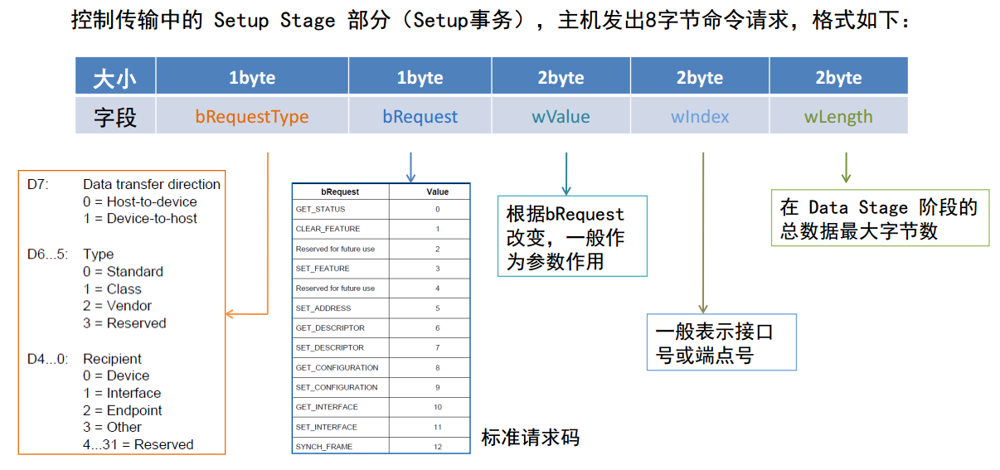
枚举的详细过程：
- (USB主机检测到USB设备插入后，就会先对设备复位。USB设备在总线复位后其地址为0，这样主机就可以通过地址0和那些刚刚插入的设备通信。USB主机往地址为0的设备的端点0发送获取没备描述符的标准请求（这是个控传输的建立过程）。设备收到该请求后，会按照主机请求的参数，在数据过程将设备描述符返回给主机。主机在成功获取到一个数据包的设备描述符并且确认没有错误后，就会返回一个0长度的确认数据包（状态过程）给设备，从而进入到接下来的设置地址阶段。这里需要注意的是．第一次主机只会读取一个数锯包的设备描述符，而标准的设备描述有18字节，有些USB设备的端点0大小不足18字节（但至少具有8字节），在这种情况下，USB主机也是只发送一次数据输入请求，多余的数据将不会再次请求。因此，如果当设备端点0大小不足18字节时，就需要注意到这个问题。也就是说在第一次获取设备描述符时，只需要返回一次数据即可，不要再等主机继续获取剩余数掘（如果还有），因为主机不会这么干的。当主机成功获取到设备描述符的前8字节之后（USB协议规定端点0最大包长至少要有8字节），它就知道端点0的最大包长度了，因为端点0最大包长度刚好在没备描述符的第8字节处。
- 主机对设备又一次复位。这时就进入到了设置地址阶段。USB主机往地址为0的设备的端点0发出一个设置地址的请求（控制传输的建立过程），新的设备地址包含在建立过程的数据包中。具体的地址由USB主机负责管理，主机会分配一个唯一的地址给刚接入的设备。USB设备在收到这个建立过程之后，就直接进入到状态过程，因为这个控制传输没有数据过程。设备等待主机请求状态返回（一个输人令牌包），收到输人令牌包后，设备就返回0长度的状态数据包。如果主机确认该状态包已经正确收到，就会发送应答包ACK给设备，设备在收到这个ACK之后，就要启用新的设备地址了。这样设备就分配到了一个唯一的设备地址，以后主机就通过它来访问该设备。
- 主机再次获取设备描述符。这次跟第一次有点不一样，首先是主机不再使用地址0来访问设备，而是新的设备地址；另外，这次需要获取全部的18字节的设备描述符。如果你的端点0最大包长小于18字节那就会有多次请求数据输入（即发送多个IN令牌包）。
- 主机获取配置描述符。配置描述符总共为9字节。主机在获取到配置描述符后，根据配置描述符中所描述的配置集合总长度，获取配置集合。获取配置描述符和获取配置描述符集合的请求是差不多的，只是指定的长度不一样。有些主机干脆不单独获取配置描述符，而是直接使用最大长度来获取配置描述符集合，因为设备实际返回的数据可以少于指定的字节数。配置集合包括配置描述符、接口描述符、类特殊描述符（如果有）、端点描述符等。接口描述符、类特殊描述符、端点描述符是不能单独获取的，必须跟随配置描述符以一个集合的方式一并返回。如果有字符串描述符，还要获取字符串描述符。另外，像HID设备还有报告描述符等，它们是单独获取的。
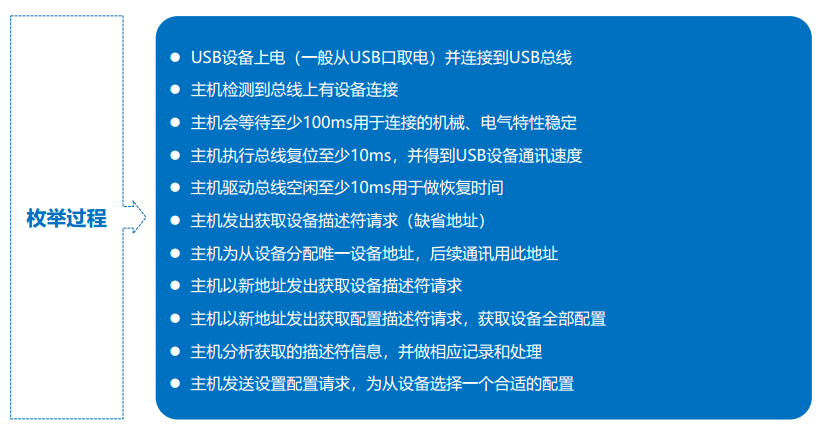
- 原文作者：Binean
- 原文链接：https://bzhou830.github.io/post/20220212GD32USB03/
- 版权声明：本作品采用知识共享署名-非商业性使用-禁止演绎 4.0 国际许可协议进行许可，非商业转载请注明出处（作者，原文链接），商业转载请联系作者获得授权。